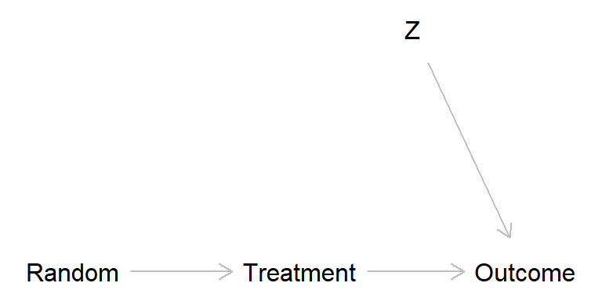
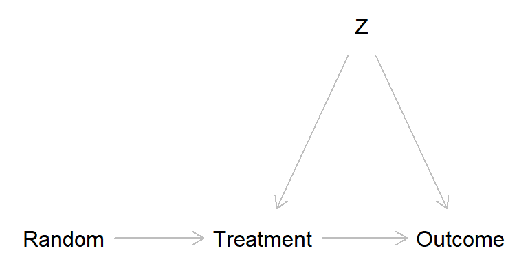
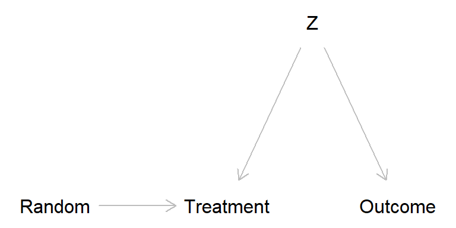
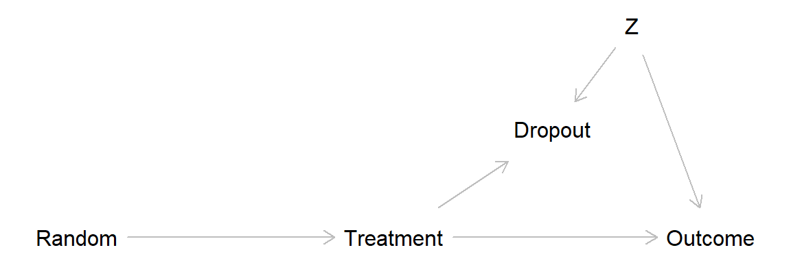
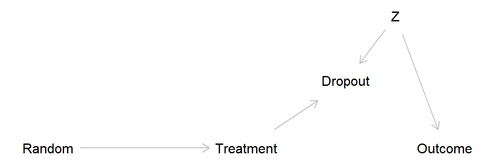

Code
library(dagitty) # R implementation of http://www.dagitty.netWarning: package 'dagitty' was built under R version 4.4.3Load R-libraries
library(dagitty) # R implementation of http://www.dagitty.netWarning: package 'dagitty' was built under R version 4.4.3Theoretical articles to read:
The randomized experiment is often labeled the “Gold standard” of causal inference. A bit undeservedly if you ask me:
To be fair, some of the above applies also to within-subject experiments, including
Single-N designs (my “Gold standard”).
Below I will use Directed Acyclical Graphs (DAGs) to illustrate how confounding may cause problems even in large randomized experiments with non-compliance or attrition.
Problem: Confounding by unmeasured variable causing both treatment compliance and outcome.
Randomized experiment
library(dagitty) # R version of http://www.dagitty.net
randomized_exp <- dagitty( "dag {
Random -> Treatment
Treatment -> Outcome
Z -> Outcome
}")
coordinates(randomized_exp) <- list(
x = c(Random = 1, Treatment = 2, Z = 2.5, Outcome = 3),
y = c(Random = 2, Treatment = 2, Z = 1.5, Outcome = 2))
plot(randomized_exp)
Broken randomized experiment (treatment has a causal effect)
broken_exp <- dagitty( "dag {
Random -> Treatment
Treatment -> Outcome
Z -> Treatment -> Outcome
Z -> Outcome
}")
coordinates(broken_exp) <- list(
x = c(Random = 1, Treatment = 2, Z = 2.5, Outcome = 3),
y = c(Random = 2, Treatment = 2, Z = 1.5, Outcome = 2))
plot(broken_exp)
Broken randomized experiment (treatment has no causal effect)
broken_exp2 <- dagitty( "dag {
Random -> Treatment
Z -> Treatment
Z -> Outcome
}")
coordinates(broken_exp2) <- list(
x = c(Random = 1, Treatment = 2, Z = 2.5, Outcome = 3),
y = c(Random = 2, Treatment = 2, Z = 1.5, Outcome = 2))
plot(broken_exp2)
The problem is that \(Z\) in the broken experiment scenarios may introduce bias. One way to think about this is offered by the potential outcome perspective, from which we may define four “causal types”. Think of an experiment in which kids are randomly assigned to “music lesson” (treatment) or “no music lessons” (control), cf. Schellenberg (2004).
We usually assume that there are no defiers. Sometimes it is also possible to assume no always takers, if, for instance, we are administrating the music lessons we may make sure to only let in those who were assigned to treatment (but you never know, maybe an always-taker would buy similar music lessons from somewhere else).
It might be that the possible confounder \(Z\) may lead to unbalanced groups, for instance, \(Z\) might be socioeconomic status (SES), and maybe there are more never-takers among people with low compared to high SES. This may lead to lower SES among the non-treated than the treated, and this may look as an effect if treatment on the outcome. In Schellenberg (2004), the outcome was IQ scores, a variable that probably is related to SES.
Sagarin et al. (2014)
Simple example:
Randomized experiment, 500 to Control group (do nothing), 500 to Experimental group (participate in training program).
Non-compliance: 100 participants in the treatment group did not take the treatment, and those were at high risk of mortality for other reasons (confounder Z).
Data
| Survived | Dead | Row sum | |
|---|---|---|---|
| Control | 450 | 50 | 500 |
| Treatment | 380 | 20 | 400 |
| Control non-complier | 80 | 20 | 100 (100 non-compliers, assigned to treatment) |
| Column sum | 910 | 90 | 1000 |
Intention-to-treat
| Survived | Dead | Row sum | |
|---|---|---|---|
| Control | 450 | 50 | 500 |
| Treatment | 380 + 80 | 20 + 20 | 500 (400 + 100 non-compliers) |
| Column sum | 910 | 90 | 1000 |
# Relative risk and risk difference Control vs. Treated
RD <- c(RD = (50/500) - (40/500))
RR <- c(RR = (50/500) / (40/500))
round(c(RR, RD), 3) RR RD
1.25 0.02 As-treated analysis: Risk mortality in Control group vs. Treatment group
| Survived | Dead | Row sum | |
|---|---|---|---|
| Control | 450 + 80 | 50 + 20 | 600 (500 + 100 non-compliers) |
| Treatment | 380 | 20 | 400 |
| Column sum | 910 | 90 | 1000 |
# Relative risk and risk difference Control vs. Treated
RD <- c(RD = (70/600) - (20/400))
RR <- c(RR = (70/600) / (20/400))
round(c(RR, RD), 3) RR RD
2.333 0.067 Per-protocol analysis: Risk mortality in Control group vs. Treatment group
| Survived | Dead | Row sum | |
|---|---|---|---|
| Control | 450 | 50 | 500 |
| Treatment | 380 | 20 | 400 |
| Column sum | 830 | 70 | 900 |
# Relative risk and risk difference Control vs. Treated
RD <- c(RD = (50/500) - (20/400))
RR <- c(RR = (50/500) / (20/400))
round(c(RR, RD), 3) RR RD
2.00 0.05 Hypotetical Data 1 (best case)
Assuming that all non-compliers (never-takers) would have survived had they taken the treatment
| Survived | Dead | Row sum | |
|---|---|---|---|
| Control | 450 | 50 | 500 |
| Treatment | 380 + 100 | 20 | 500 (400 + 100 surviving never-takers) |
| Column sum | 930 | 70 | 1000 |
Upper bound: Risk mortality in Control group vs. Treatment group
# Relative risk and risk difference Control vs. Treated
RDhi <- c(RDhi = (50/500) - (20/500))
RRhi <- c(RRhi = (50/500) / (20/500))
round(c(RRhi, RDhi), 3)RRhi RDhi
2.50 0.06 Hypotetical Data 2 (worst case)
Assuming that all never-takers would have died had they taken the treatment
| Survived | Dead | Row sum | |
|---|---|---|---|
| Control | 450 | 50 | 500 |
| Treatment | 380 | 20 + 100 | 500 (400 + 100 non-surviving never takers) |
| Column sum | 830 | 170 | 1000 |
Lower bound: Risk mortality in Control group vs. Treatment group
# Relative risk and risk difference Control vs. Treated
RDlo <- c(RDlo = (50/500) - (120/500))
RRlo <- c(RRlo = (50/500) / (120/500))
round(c(RRlo, RDlo), 3) RRlo RDlo
0.417 -0.140 Missing data may lead to similar problem as non-compliance, through adjusting for a collider variable and thereby introducing bias (often called attrition bias).

Classification of missing data:
Common methods for dealing with missing data in randomized experiments (and elsewhere):
For more on missing data, see Gelman et al. (2021) Chapter 17, sections 3-6 (discussed further in the Statistics course).
This DAG show a scenario with no treatment effect and drop out related to a covariate Z, leading to attrition bias.

Here a simulation of this scenario.
set.seed(999)
## Generate treatment and covariate variables
n <- 400 # Total sample size
rand <- sample(c(0, 1), size = n, replace = TRUE) # Randomization
treat <- rand # In this simulation there are only compliers
z <- rnorm(n) # Standardized covariate, normal distribution, mean = 0, sd = 1
## Generate drop out and dependent variable (y)
# Everyone in treatment group low on z drops out
dropout <- 1 * (treat == 1 & z < -1)
# True data: including dropouts. Outcome related to z, but not to treatment
ytrue <- rnorm(n) + 3 * z
# Observed data: Dropouts = NA
yobs <- ytrue
yobs[dropout == 1] <- NA
## Put data in data frame
d <- data.frame(rand, treat, z, dropout, ytrue, yobs) # Make data frame
summary(d) rand treat z dropout
Min. :0.000 Min. :0.000 Min. :-2.588446 Min. :0.000
1st Qu.:0.000 1st Qu.:0.000 1st Qu.:-0.711258 1st Qu.:0.000
Median :1.000 Median :1.000 Median : 0.003622 Median :0.000
Mean :0.515 Mean :0.515 Mean :-0.023033 Mean :0.085
3rd Qu.:1.000 3rd Qu.:1.000 3rd Qu.: 0.655788 3rd Qu.:0.000
Max. :1.000 Max. :1.000 Max. : 3.061137 Max. :1.000
ytrue yobs
Min. :-9.12489 Min. :-7.010
1st Qu.:-2.13428 1st Qu.:-1.401
Median : 0.03864 Median : 0.388
Mean :-0.08352 Mean : 0.359
3rd Qu.: 2.00790 3rd Qu.: 2.235
Max. :10.13607 Max. :10.136
NA's :34 table(treatment = d$treat, dropout = d$dropout) dropout
treatment 0 1
0 194 0
1 172 34Analyze “true data”, that is, assuming we know the values for the drop outs. No suggested treatment effect, as expected given our simulation.
## Analyze "true" data, i.e. assuming we know values for drop outs
m_true <- lm(ytrue ~ treat, data = d) # or t.test(g$y ~ g$treat, var.equal = TRUE)
m_true
Call:
lm(formula = ytrue ~ treat, data = d)
Coefficients:
(Intercept) treat
-0.07720 -0.01226 confint(m_true) 2.5 % 97.5 %
(Intercept) -0.5144118 0.3600022
treat -0.6214896 0.5969766Analyze observed data, drop outs not included. Strong treatment effect suggested, this because we unintentionally controlled for “dropout” (analyses conditional on dropout = 0) and thereby introduced bias through covariate Z (so called “collider bias”)
## Analyze observed data, drop outs excluded
table(treatment = d$treat[d$dropout == 0], dropout = d$dropout[d$dropout == 0]) dropout
treatment 0
0 194
1 172m_observed <- lm(yobs ~ treat, data = d) # lm() excludes rows with NA
m_observed
Call:
lm(formula = yobs ~ treat, data = d)
Coefficients:
(Intercept) treat
-0.0772 0.9283 confint(m_observed) 2.5 % 97.5 %
(Intercept) -0.4705239 0.3161144
treat 0.3545671 1.5020637In this simple scenario, the bias is removed if we control for the covariate Z, for example, by adding it as a covariate in the regression analyses
## Adjusting for the covariate eliminates bias
m_observed2 <- lm(yobs ~ treat + z, data = d)
m_observed2
Call:
lm(formula = yobs ~ treat + z, data = d)
Coefficients:
(Intercept) treat z
0.008107 -0.007058 2.944561 confint(m_observed2) 2.5 % 97.5 %
(Intercept) -0.1349844 0.1511988
treat -0.2190974 0.2049811
z 2.8260857 3.0630357The attrition bias discussed above is an example of survivorship bias, a specific form of selection bias that occurs when only the “survivors” or successful outcomes are considered, while failures or non-survivors are excluded from analysis.
A classic example involves the analysis of aircraft damage during World War II. Initially, it was suggested to reinforce the areas of returning planes that showed the most damage. However, statistician Abraham Wald proposed reinforcing the vital areas that showed little to no damage. He recognized that planes with damage to these critical areas had not returned.
Another example is the analysis of successful musicians. Suppose a study shows that all of them practiced for more than 10,000 hours. It would be incorrect to conclude that “practicing for 10,000+ hours will make you a professional musician,” because the sample excludes those who practiced extensively but did not achieve success. By ignoring the “non-survivors” (those who did not make it despite the effort), the conclusion falsely attributes success solely to the number of practice hours, when other factors may play a role.
The practice problems are labeled Easy (E), Medium (M), and Hard (H), (as in McElreath (2020)).
11E1.
a. Explain with an example and a DAG how missing data may lead to bias of causal effect estimates in randomized experiments.
b. Explain with an example and a DAG how non-compliance may lead to bias of causal effect estimates in randomized experiments.
11E2.
Explain why as-treated and per-protocol analysis of data from randomized experiments may be biased in situations with non-compliance, and explain in what way, if any, this problem is avoided using intention-to-treat analysis.
11E3.
Treatment effect bounding is an attempt to estimate an interval of possible effect sizes in cases of drop outs or non-compliance in randomized experiments. The general idea can be applied in other contexts: Assume that a course was given a mean rating of 8 on a scale from 1 (disaster) to 10 (excellent); 100 students took the course, but only 70 provided a rating. Calculate an interval of possible mean ratings had all students answered.
11E4. Why might replacing missing data in a variable with its mean value seem like a reasonable approach, and what are the significant drawbacks of this method?
11E5. Fooled by the Winners is a book by David Lockwood (2021, Austin, Texas: Greenleaf Book Group Press).
Based on the title, what do you think the book might be about?
Consider the following excerpt from the book: “In every town I have lived in, many restaurants seem to have been around for a long time, in some cases decades. This could lead one to believe that restaurants are a relatively reliable, stable business.” (p.45) Why might this conclusion be flawed?
11M1. Last-value-carried-forward is a common method for imputation of data lost to follow up.
11M2. Answer a. and b. from 11M1 but now with regard to intention-to-treat (ITT) analyses.
11M3. Above we defined four types of compliance types. A somewhat similar typology relates to outcomes in a scenario with a binary exposure (e.g., smoking yes/no) and a binary outcome (e.g., lung cancer yes/no): 1. Doomed, 2. Causal, 3. Preventive, 4. Immune.
11M4. Explain the concepts of missing data mechanisms:
using an illustrative example based on an imagined randomized experiment? Include how each mechanism would impact data analysis and interpretation.
11H1. Illustrate with a simulation how non-compliance may bias effect estimates, assume:
11H2. Illustrate with a simulation how missing data may or may not bias effect estimates in situations with complete cases analysis and:
11H3. Rerun your simulations from 11H2, but now using one or several methods for data imputation.
sessionInfo()R version 4.4.2 (2024-10-31 ucrt)
Platform: x86_64-w64-mingw32/x64
Running under: Windows 11 x64 (build 26100)
Matrix products: default
locale:
[1] LC_COLLATE=Swedish_Sweden.utf8 LC_CTYPE=Swedish_Sweden.utf8
[3] LC_MONETARY=Swedish_Sweden.utf8 LC_NUMERIC=C
[5] LC_TIME=Swedish_Sweden.utf8
time zone: Europe/Stockholm
tzcode source: internal
attached base packages:
[1] stats graphics grDevices utils datasets methods base
other attached packages:
[1] dagitty_0.3-4
loaded via a namespace (and not attached):
[1] digest_0.6.37 fastmap_1.2.0 xfun_0.52 knitr_1.50
[5] htmltools_0.5.8.1 rmarkdown_2.29 cli_3.6.5 compiler_4.4.2
[9] boot_1.3-31 rstudioapi_0.17.1 tools_4.4.2 curl_6.4.0
[13] evaluate_1.0.3 Rcpp_1.0.14 yaml_2.3.10 rlang_1.1.6
[17] jsonlite_2.0.0 V8_6.0.4 htmlwidgets_1.6.4 MASS_7.3-61